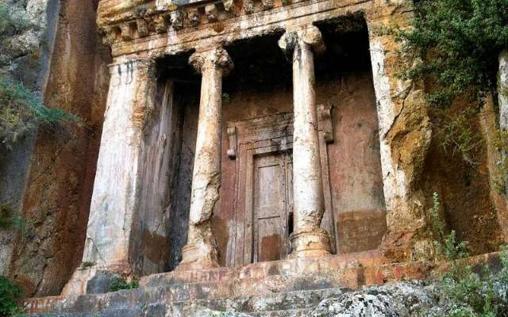

Kaya mezarları, Likya Birliği'nin kentleri ve masmavi koylar. Bu rota Fethiye'den başlayıp kıyı boyunca doğuya, Antalya'ya ilerler; acele etmeden üç günde gezilebilir.
Gün 1

Amintas Kaya Mezarı, Fethiye şehir merkezinin hemen üzerindeki kayalıklara oyulmuş, Likya bölgesinin en etkileyici kaya mezarlarından biridir.

Kayaköy, Fethiye yakınlarında, yamaçlara yayılmış yüzlerce taş evden oluşan, bugün terk edilmiş bir kasabadır.

Tlos, Fethiye yakınlarında, Xanthos vadisine hâkim yüksek bir kayalığın üzerine kurulmuş ve Likya'nın en eski ve en büyük kentlerinden biri olarak kabul edilen antik…

Pınara, Fethiye yakınlarında, yüzlerce kaya mezarıyla delik deşik olmuş dev bir kaya kütlesinin eteğinde kurulmuş Likya kentidir.
Gün 2

Letoon, Xanthos'un yakınında, Likya Birliği'nin en önemli dini merkezi olan kutsal alandır.

Ksanthos, Likya'nın en önemli kenti ve uzun süre bölgenin yönetim merkeziydi.

Patara, Likya'nın en önemli liman kentlerinden biriydi ve bugün kum tepeleriyle çevrili, kilometrelerce uzanan ünlü plajının hemen arkasında yer alır.

Likya Uygarlıkları Müzesi, Myra'nın antik limanı Andriake'de, İmparator Hadrianus döneminde inşa edilmiş büyük tahıl ambarının (granarium) restore edilmiş yapısında yer…
Gün 3

Myra, Likya'nın en etkileyici kentlerinden biridir ve Demre ovasının kenarında yükselen kayalıklara oyulmuş mezarlarıyla tanınır.

Aziz Nikolaos Anıt Müzesi, Demre'de, dünyanın dört bir yanında Noel Baba figürünün ilham kaynağı olarak bilinen Aziz Nikolaos'un adını taşıyan kilisedir.

Limyra, Finike yakınlarında, Toros eteklerinden çıkan kaynak sularının kalıntılar arasından aktığı büyüleyici bir Likya kentidir.

Olympos, Beydağları'nın denize indiği bir vadide, çam ve defne ağaçlarının arasında, bir derenin iki yakasına kurulmuş romantik bir antik kenttir.

Phaselis, Kemer yakınlarında, çam ormanlarının denize indiği küçük bir yarımadada kurulmuş, üç ayrı limanıyla ünlü bir antik kenttir.
Gezinizi planlamanıza yardımcı olacak, gün gün düzenlenmiş hazır rotalar. Süreler yaklaşık değerlerdir; ziyaret saatlerini ve yol koşullarını yola çıkmadan önce kontrol edin.